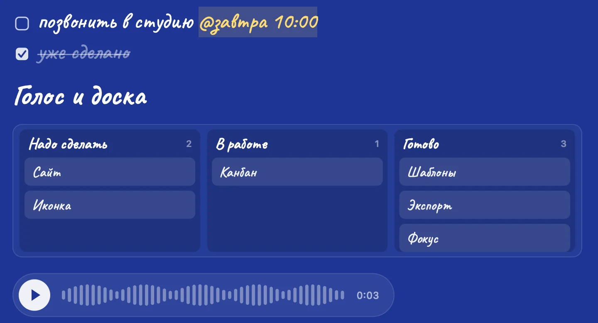
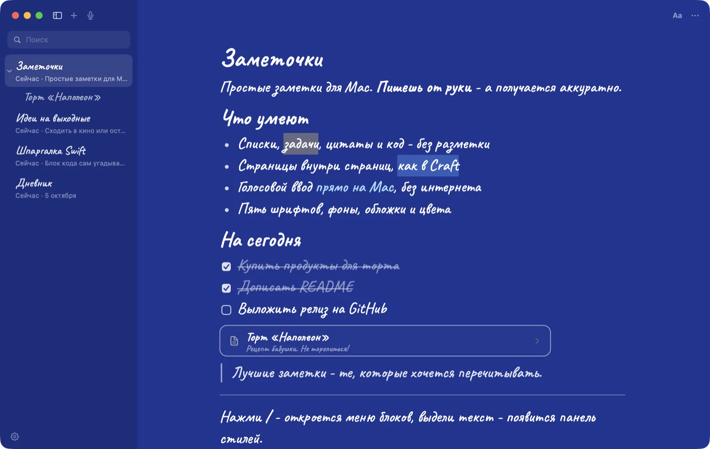
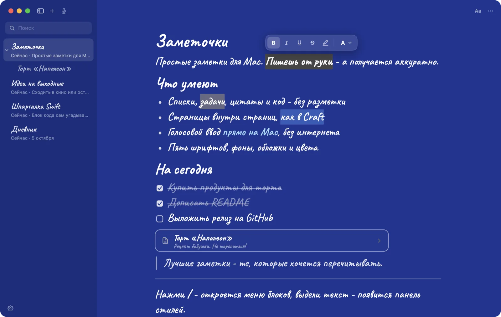
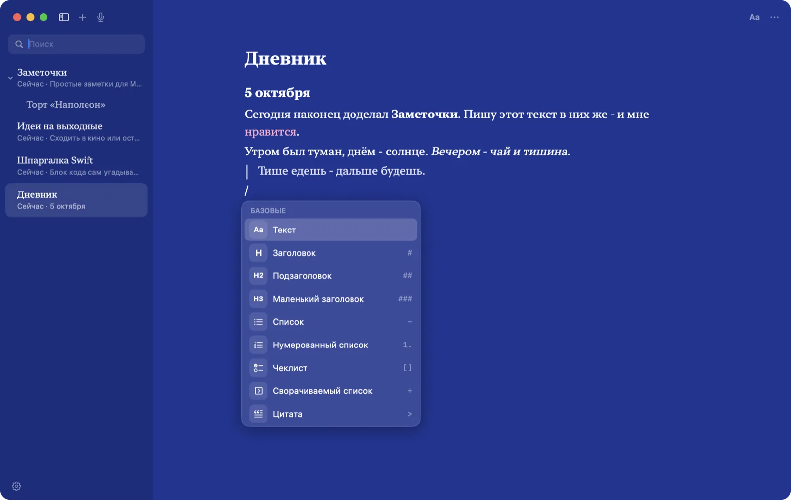
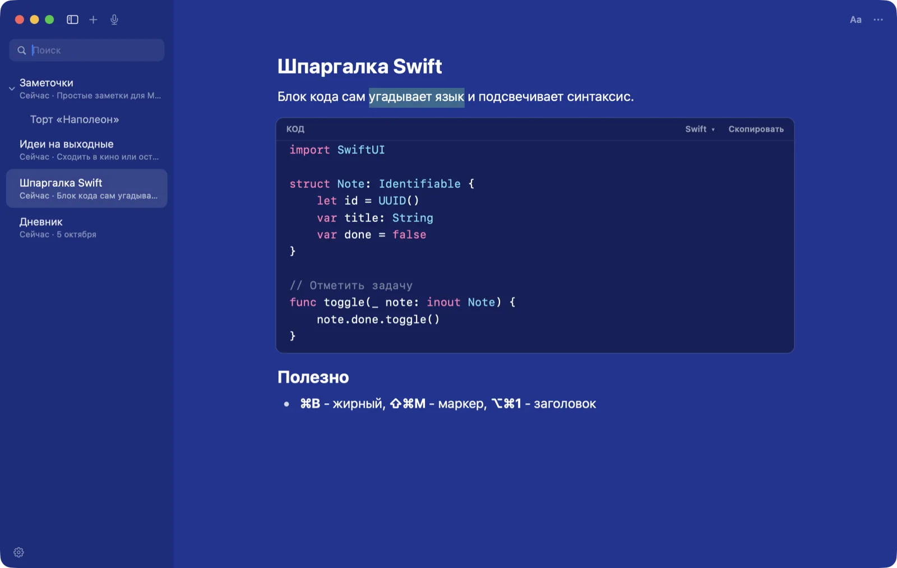
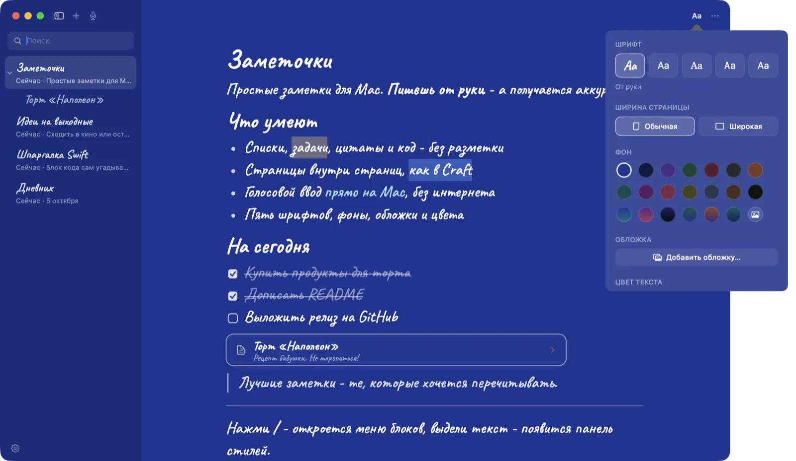
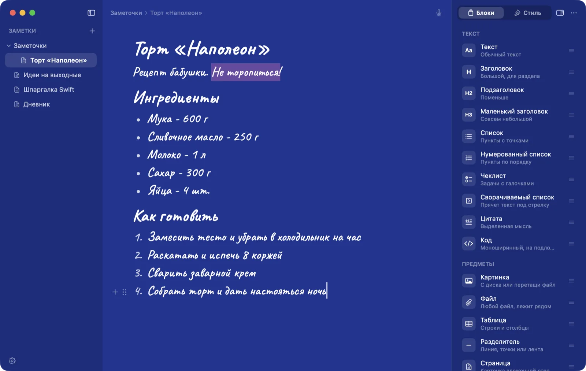

Простые и красивые заметки для Mac. Пишешь от руки — а получается аккуратно. Без аккаунтов и облаков: всё живёт только на твоём Mac.
Бесплатно · открытый код · macOS 14 и новее · на iPhone - прямо в Safari, без App Store
# заголовок- список[] задача
> цитата1. нумерация/ меню@завтра 10:00 напоминание (1.1)
Скоро в 1.1 готовится
Девять вещей, о которых просили. Уже сделаны и выйдут в версии 1.1. Разметки по-прежнему не видно, облака по-прежнему нет.

/доскаБесконечный холст: карандаш, маркер, фигуры, стрелки, которые держатся за фигуры, стикеры и картинки. В заметке — превью, нажал — рисуешь.
Первая строка — всегда заголовок заметки, отделённый линией. Ниже — текст и блоки. Ничего не съезжает.
Колонки и карточки прямо в заметке. Перетаскивай задачи из «Надо сделать» в «Готово».
Записал мысль голосом — в тексте плеер с волной, а под ним расшифровка. Всё на Mac, без интернета.
Допиши к задаче @завтра 10:00, @пт или @15.10 — придёт уведомление. Отметил — напоминание снялось.
/шаблон — встреча, план недели, идея проекта, дневник, покупки и проект с доской.
Страница уходит в PDF или PNG такой же красивой: фон, почерк, галочки. Или сразу картинкой в буфер — в телеграм.
В углу — слова и время чтения. Режим фокуса приглушает всё, кроме строки, которую пишешь.
Из любой программы: окошко поверх всего, Enter — и мысль уже во «Входящих».
Что умеют
Блоки как в Notion, страницы как в Craft — но без звёздочек, решёток и регистраций.
Текст без разметки
Пишешь # — строка становится заголовком, - — списком, [] — задачей. Символов не видно, заглавные буквы ставятся сами.

Панель над выделением
Выдели слова — появится панель: жирный, курсив, зачёркнутый, маркер восьми цветов и цвет текста.

Меню «/»
Нажми / в начале строки — меню блоков с поиском: /код, /h1, /табл, /доска.

Код с подсветкой
Язык угадывается сам (или выбирается из 17), подсветка синтаксиса и кнопка «Скопировать».

Страницы в страницах
Карточка страницы прямо в тексте, дерево слева, крошки сверху. Заметки перетаскиваются мышью.
Свой стиль у страницы
Пять шрифтов, 14 цветов, градиенты, обложки. Стиль по умолчанию подстраивает даже иконку в Dock.

Три вида — выбери свой
Заметки и стили общие, отличается только то, что вокруг текста.

Список с датами слева — и больше ничего.
Сорок секунд — и всё понятно
Ничего не уходит в сеть
Заметки — обычные JSON-файлы в твоей папке. Хочешь уйти — экспорт в Markdown одной кнопкой.
Здесь нет
- Аккаунта и пароля
- Облака и синхронизации «на наших серверах»
- Подписки
- Аналитики и трекеров
Зато есть
- Файлы у тебя: ~/Library/Application Support/Zametki
- Резервные копии, если заметка вдруг уменьшилась
- Голос и напоминания — тоже без интернета
- Открытый код, лицензия MIT
Руки на клавиатуре
Попробуй — это бесплатно
Скачай, перетащи в «Программы», при первом запуске — правый клик → «Открыть».
На iPhone: открой ссылку в Safari → «Поделиться» → «На экран „Домой“». Работает без интернета, заметки живут на телефоне.